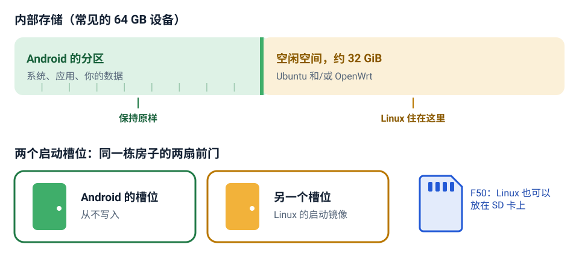
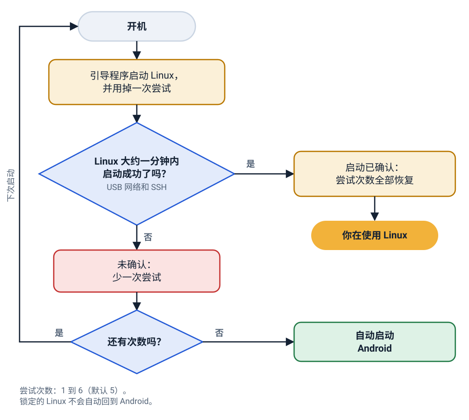
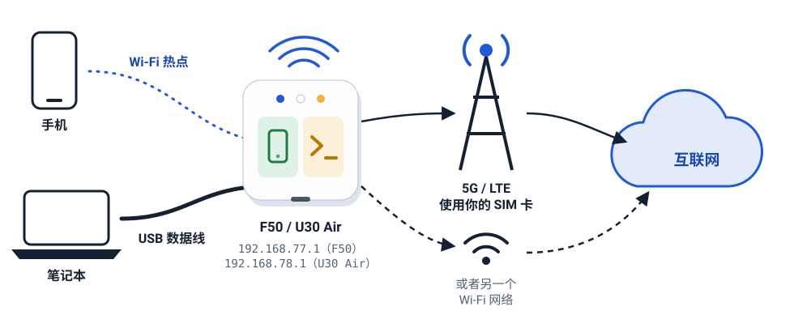

你的 5G 随身 Wi-Fi 就是一台 Linux 电脑
在 ZTE F50 / MU300 和 ZTE U30 Air 上，与 Android 并存安装 Ubuntu 或 OpenWrt。SSH、Wi-Fi、蓝牙和 5G 基带都能用。Android 会保留；如果哪天 Linux 启动不了，设备会自动回到 Android。

这是什么？
ZTE F50 是一个插 SIM 卡、通过 Wi-Fi 分享 5G 网络的小盒子。它里面是一台运行 Android 的小电脑。本项目在 Android 旁边装上一个真正的 Linux 系统。
可以把它想成一台已经内置 5G 基带、Wi-Fi 热点和 32 GB 存储的树莓派。ZTE U30 Air 是同一块主板和芯片再加一块电池，也同样支持。
为什么要这样做？
- 一台由你掌控的 5G 路由器带 LuCI 网页界面的 OpenWrt、防火墙和你自己的规则，作用于热点上的每一部手机和笔记本。
- 一台口袋服务器带 systemd 和
apt的 Ubuntu 24.04 或 26.04 LTS：运行有自己网络连接的服务。 - 一个能对话的基带收发短信、发送 USSD 代码；在控制面板里锁定频段和小区。
- 为身后所有设备提供的 VPNWireGuard、OpenVPN、VLESS 等，带断网保护（kill switch），作为可选模块提供。
哪些功能可用
- 移动数据：5G NSA 和 LTE与 Wi-Fi 和 USB 客户端共享；基带重置后会自动重新连接。
- Wi-Fi 热点5 GHz（802.11ac）或 2.4 GHz，同一时间只能一个。
- Wi-Fi 客户端连接另一个网络（WPA2、WPA2/WPA3 混合），并通过 USB 共享。
- USB 网络和 SSH插到电脑上，它会显示为一块网卡。
- 短信和 USSD命令行里的
sms和mu300-ussd，控制面板里也有。 - VPN支持 WireGuard、OpenVPN、VLESS、VMess、Trojan、Shadowsocks、Clash/mihomo 配置；Tailscale 走隧道。
- 三个内核紫光展锐的厂商内核 5.4、主线 6.18 LTS 和主线 7.2，三者都支持 KVM。
- 蓝牙和 GPUBlueZ，以及用于 OpenCL 的 Mali-G57（无显示输出）。
- Android 保留一条命令就能切回去，启动失败会自动回退。
- 没有屏幕，没有声音USB-C 视频输出不工作，主板上没有扬声器和麦克风。
支持的设备
| ZTE F50 / MU300 | ZTE U30 Air | |
|---|---|---|
| 芯片 | 紫光展锐 T760（UMS9620） | 相同 |
| 供电 | 仅 USB | 电池（4050 mAh）、充电芯片和电量计 |
| USB 网络地址 | 192.168.77.1 | 192.168.78.1 |
| SD 卡 | Linux 可以放在卡上，代替内部存储 | 没有卡槽 |
| 其他 | 状态指示灯 | 状态指示灯、电池读数、NFC 标签、通过 OTG 转接头的 USB 主机模式（主线内核） |
安装程序会从 Android 读出是哪一台，你不需要手动选择。U30 Pro 是另一颗芯片（UMS9632）， 不受支持。大多数设备有 64 GB 内部存储；如果是 32 GB 版本，请先阅读检查步骤。
它是怎么工作的：讲个故事
四张小图就能讲清楚所有重点。
1. 一栋房子，两个房间
你的设备就像一栋房子。Android 已经带着它所有的东西住在一个房间里。在常见的 64 GB 设备上，还有第二个没人用的空房间： Android 分区之后大约 32 GiB 的存储空间。Linux 搬进这个空房间。Android 房间里的东西一样都不会被挪动或改变。
这栋房子还有两扇前门，叫做启动槽位 A 和 B。Android 用其中一扇。安装程序把 Linux 的门，也就是它的启动镜像，装在另一扇上。

2. 每次启动都是一次试用
设备每次启动 Linux，都把它当作一次试用，并用掉一次机会。Linux 启动好以后（USB 网络和 SSH 可用），它会告诉设备“这次启动没问题”，所有机会就都恢复了。如果 Linux 没能起来，这次机会就算用掉了。连续 5 次启动失败后（你可以选 1 到 6），设备就直接启动 Android。你不会因为意外把自己锁在外面。

3. 回到 Android 只需一条命令
在 Linux 中，要求下次启动进入 Android，然后重启：
sudo mu300-next-boot android
sudo reboot在 Android 中，用 su -c mu300-linux，或者安装程序添加的“MU300 Linux” Magisk 模块的 Action 按钮，就能回到 Linux。要永久移除 Linux，在电脑上运行卸载程序。这些都在更新与安全（英文）页面上。
4. 桌上的私人网络
手机和笔记本连接设备的 Wi-Fi 热点，或者插在它的 USB 口上。设备通过你的 SIM 卡用 5G 或 LTE，或者通过它加入的另一个 Wi-Fi 网络，把它们带到互联网。通过 USB，你的电脑可以在 192.168.77.1（F50）或 192.168.78.1（U30 Air）访问设备本身。

快速开始
在 Windows、macOS 或 Linux 上，设备已 root 并用 USB 连接，大约 15 分钟。安装指南 会逐一讲解每个问题。
检查
./install.sh --check只读取设备，告诉你 Linux 能不能装下、装在哪里。安装
./install.sh会问几个问题，显示将要写入的内容，并等你输入INSTALL。登录
大约一分钟后：
ssh ubuntu@192.168.77.1，OpenWrt 则打开http://192.168.77.1。
git clone https://github.com/dikeckaan/mu300-linux
cd mu300-linux
MU300_LANG=zh ./install.sh --check # 只读取，不写入任何东西
MU300_LANG=zh ./install.sh # Windows: .\install.ps1 -Lang zhMU300_LANG=zh（Windows 上为 -Lang zh）会让安装程序直接以中文启动；不加的话，它会在开始时询问语言。
需要付出的代价
- Android 和 Linux 共用这台设备。同一时间只能运行一个；重启就能在两者之间切换。
- 没有显示输出。这是一台无屏幕的机器，通过 SSH 或网页使用。
- 没有声音。主板上没有扬声器和麦克风；带声音的语音通话不能用。
- 大约 1.4 GB 内存。其余大部分留给了基带固件。
这是一个利用业余时间做的实验性项目。它不是产品，没有客服，也不提供任何担保。向手机级设备写入数据可能让它无法使用； root、解锁和救砖工具都不属于本项目。请做好备份，不要装在你承受不起损失的设备上。修改设备发出的内容（TTL、频段锁定、VPN）可能违反运营商条款或当地法律。完整说明见 README。
常见问题
安装 Linux 会删除 Android 或我的数据吗？
在常见的 64 GB 设备上不会。Linux 安装在不属于任何分区的约 32 GiB 空间里，Android 的分区、数据和分区表都不会被写入。安装程序只写入一个启动分区（Android 没有在用的那个槽位）以及 misc 的 32 个字节。
例外是 32 GB 版本：它完全没有空闲空间。这时可以用 SD 卡（F50），或者让安装程序缩小 userdata，这会清除 Android 里的全部内容。这条路是实验性的，会先要求你输入 ERASE。
需要先给设备 root 吗？
需要。设备必须已经 root 并解锁：它已经能启动修改过的 Android 启动镜像，并且打开了 USB 调试。做到这一步不属于本项目，你要按照那些工具自己的说明进行，风险自负。
如果 Linux 启动不了怎么办？
设备会自动回到 Android。每次启动 Linux 都是一次试用；如果连续失败 5 次（安装时可在 1 到 6 之间选择），下一次启动就是 Android。详见安全网（英文）。
怎样回到 Android？
在 Linux 中：sudo mu300-next-boot android，然后 sudo reboot。要彻底移除 Linux，请在设备处于 Android 时运行 ./uninstall.sh（Windows：.\uninstall.ps1）。在 Android 中，su -c mu300-linux 可以再次启动 Linux。
Ubuntu 还是 OpenWrt，该选哪个？
如果主要想要一个带网页界面的路由器，选 OpenWrt；如果想要一台用 apt 的小服务器，选 Ubuntu。也可以两个都装，用 mu300-os 切换。选择系统（英文）页面连同三个内核一起做了说明。
支持 ZTE U30 Pro 吗？
不支持。U30 Pro 用的是另一颗芯片（UMS9632）。支持的是 ZTE F50 / MU300 和 ZTE U30 Air，两者使用同一块主板和芯片；安装程序会自己识别是哪一台。
可以不用电脑安装吗？
可以，前提是设备已经运行装有 Magisk 26 或更新版本的 root 过的 Android：每个发布版本都有 Magisk zip，每个系统和内核各一个，在 Magisk 应用里安装。带控制面板的 OpenWrt 只能通过电脑上的安装程序安装。参见用 Magisk zip 安装。
可以把 Linux 装在 SD 卡上吗？
F50 可以：卡槽里有一张至少 700 MiB 的卡时，安装程序会问 Linux 是否装到卡上。U30 Air 没有卡槽。
有屏幕或声音吗？
没有。USB-C 转 HDMI 不工作，主板上也没有扬声器和麦克风。你通过 SSH、网页界面或串口控制台使用设备。
要花钱吗？
不要。脚本和文档采用 MIT 许可，内核采用 GPL-2.0。发布的镜像里不含专有文件：安装程序会从你自己的设备上复制 Wi-Fi 和基带文件。